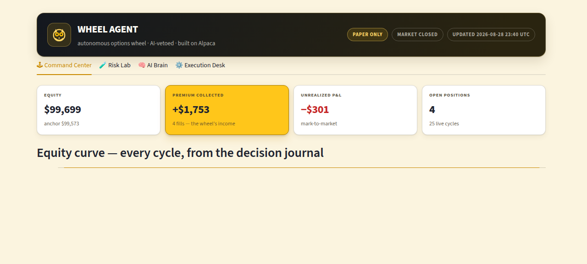

A deterministic engine sells cash-secured puts and covered calls on hard-coded rails; a Claude layer above it holds exactly two powers — read the regime and veto a new entry. It can never place, size, or force a trade, and it can never block an exit.
Retail premium sellers must run a boring, repeatable process — the wheel — and can't: the wrong delta, panic buy-backs, one oversized ticker. The usual "AI trading agent" answer makes it worse, because an LLM asked to pick trades hallucinates, drifts, and cannot be held to a risk mandate.
A deterministic wheel engine does 100% of the trading on hard-coded rails. A Claude layer sits above it as a risk governor with exactly two powers — and every refusal is journaled verbatim.
Incentive alignment by construction: an AI that cannot trade cannot churn your account. A deterministic SPY anchor backs it up — the tighter of the two readers governs.
The broker is the source of truth at every step, and everything the agent decides is appended to a public JSONL decision journal.
RISK_ON → 72% of equity as collateral · NEUTRAL → 36% · RISK_OFF → no new entries. Claude's judgment and a deterministic SPY-intraday anchor both apply — the tighter one wins.
Equity per cycle, every order with its reason, every regime read with its explanation, every error. On night 1 the journal itself caught two production bugs — both fixed live, in public.
Every gate below is a deterministic check that runs before any order — the same gates are stress-tested live on the dashboard's Risk Lab tab.
Plus: paper endpoint hard-coded (the code cannot reach live money), quality floors on every entry, exit rules that are never vetoed — de-risking is always allowed.
The full system — engine, governor, gates, journal — has been trading paper money on its own from the first evening of the hackathon. Its own decision journal caught two production bugs on night 1; both were fixed live and committed in the open.

The 6-tab dashboard: Command Center, Risk Lab (live stress test), AI Brain (regime reads & vetoes), Execution Desk, About (backtest methodology), FAQ.
The selection-first mode: each Monday the bot scores a 24-name universe (SMA200 quality gate, 63-day momentum, premium richness) and sells puts on the top 3 names only. Every premium is a real Alpaca option-trade bar; no parameter was fitted to this window.
Each exploration fixes its rules before looking at out-of-sample data. When the 1-year winner failed the full window, we published that too — the top-3 mode is the one that survived it.
| Configuration | Window | Return | Max DD | vs SPY +45.6% |
|---|---|---|---|---|
| Live engine — same rules as production | 2.5 yr | +32.2% | 18.3% | trades upside for drawdown control |
| + Defensive levers — quality screen · regime delta · cash yield | 2.5 yr | +34.2% | 12.9% | Calmar 1.51 vs 1.34 ✓ |
| + Weekly champion — 1 pick/wk, 40% position | 1 yr → 2.5 yr | +46% → +35.3% | → 27.2% | edge didn't survive the full window |
| + Top-3 weekly picks — the slide-7 headline | 2.5 yr | +54.6% | 21.5% | beats SPY on return and Calmar ✓ |
The selection layer adds measurable value: names the bot picked averaged +117% vs the universe's +64%. Momentum screens buy tops in mean-reverting years — which is why the champion failure row stays on this slide.
US listed options printed 15.2B contracts in 2025 — the sixth consecutive record — with retail estimated at 30–60% of flow. Every competitor automates execution; none sells an AI risk governor whose alignment is provable.
| Competitor | Price | They automate | The gap we fill |
|---|---|---|---|
| Option Alpha | $99–149/mo | your rules, executed | No market judgment, no AI governor, no public journal. We bring the wheel determinism + a veto-only Claude layer + bring-your-own-broker (Alpaca first). |
| Composer | $32–40/mo | stock algos | |
| Option Samurai | $39–49/mo | finding trades | |
| tastytrade | $0 + $1/ctr | education & brokerage |
Revenue: $29/mo core (one broker, full engine + governor + dashboard) · $79/mo pro (multi-account, spreads sleeve) — no payment-for-order-flow; an AI that can only say NO is also a pricing story.
Next: a defined-risk spreads sleeve, walk-forward re-validation of every gate, the weekly-champion selection mode behind an opt-in with tighter drawdown limits — and the veto-only governor offered as a safety layer for anyone else's trading agent.
Paper trading only · options involve substantial risk · hypothetical backtests don't guarantee future results · not investment advice.